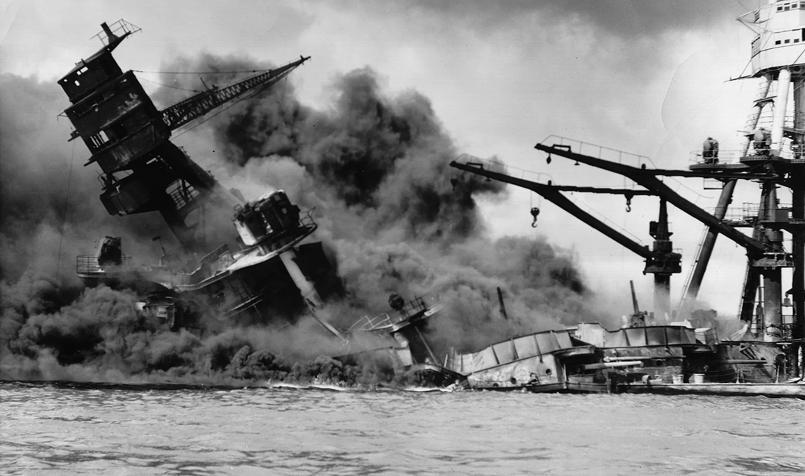

World War II (1939–1945) was a global conflict that involved the vast majority of the world’s nations, including all of the great powers, divided into two opposing military alliances: the Allies and the Axis. It was the deadliest and most widespread war in human history, resulting in the deaths of an estimated 70 to 85 million people, roughly 3% of the global population at the time. The war began on September 1, 1939, when Nazi Germany, led by Adolf Hitler, invaded Poland, leading Britain and France to declare war on Germany. It quickly expanded as the Axis powers, including Germany, Italy, and Japan, sought to dominate large territories across Europe, Asia, and the Pacific. The Allies, initially comprising the United Kingdom, France, and China, were later joined by the Soviet Union and the United States after key events like the German invasion of the Soviet Union and Japan’s attack on Pearl Harbor. The war was characterized by significant technological advancements, including the widespread use of tanks, aircraft, and submarines. It also involved brutal combat strategies, including large-scale bombings, atrocities against civilians, and the use of nuclear weapons. One of the defining aspects of World War II was its ideological nature, where totalitarian regimes sought to impose their systems of governance over vast areas, and racial ideologies, particularly Nazi Germany's pursuit of a “racially pure” state, led to horrific events like the Holocaust. The war ended with the unconditional surrender of the Axis powers, beginning with Germany on May 7, 1945, followed by Japan’s surrender on September 2, 1945, after the atomic bombings of Hiroshima and Nagasaki.
One of the most iconic and pivotal moments of World War II was the D-Day invasion, formally known as Operation Overlord, which took place on June 6, 1944. This massive military operation, spearheaded by the Allies, was the largest seaborne invasion in history and marked a turning point in the war in Europe. The invasion was aimed at liberating Nazi-occupied Western Europe, beginning with France, and involved the coordination of American, British, and Canadian forces, along with troops from various Allied nations. Over 156,000 troops landed on the beaches of Normandy, France, supported by thousands of aircraft, ships, and vehicles. The beaches were code-named Utah, Omaha, Gold, Juno, and Sword, with Omaha Beach being the site of some of the fiercest fighting. The operation was meticulously planned and involved months of deception tactics to mislead the Germans about the intended invasion location. Despite heavy resistance from the German forces, the Allies managed to establish a crucial foothold in Normandy, which allowed for the subsequent liberation of France and contributed significantly to the eventual defeat of Nazi Germany. The D-Day invasion is not only remembered for its military significance but also for the immense sacrifice of the soldiers involved. The success of Operation Overlord marked the beginning of the end of the war in Europe and demonstrated the effectiveness of Allied cooperation and strategy. It remains one of the most studied military campaigns in history, symbolizing courage, determination, and the pivotal role of unity in overcoming tyranny.
Why is it essential to learn World War II?
World War II is crucial to study because it fundamentally reshaped the global order, affecting nations on every continent and setting the stage for international relations in the decades that followed. It was a conflict of unprecedented scale, involving more than 100 million people from over 30 nations, which led to immense shifts in political power. The war marked the end of European colonial dominance and the emergence of the United States and the Soviet Union as superpowers, setting the groundwork for the Cold War. The formation of the United Nations in 1945 was a direct response to the devastation of the war, with the hope of fostering international diplomacy and preventing future global conflicts. Learning about World War II helps us understand the causes and consequences of large-scale wars and the importance of diplomacy, alliances, and global cooperation in maintaining peace. The treaties and political agreements made during and after World War II, such as the Yalta Conference and the Potsdam Agreement, shaped national borders, decolonization, and the creation of international organizations like the International Monetary Fund (IMF) and World Bank. These institutions were designed to promote economic stability and prevent the economic downturns that contributed to the rise of authoritarian regimes before the war. Additionally, the war transformed Europe, leading to the division of Germany and the establishment of NATO and the Warsaw Pact, which shaped Cold War geopolitics. By studying these developments, we can learn how global conflicts can lead to lasting political, economic, and social changes, and how international cooperation has become essential for addressing global issues like security, trade, and human rights.
One of the most important reasons to study World War II is to understand the atrocities committed during the conflict, particularly the Holocaust, and how these events shaped modern human rights frameworks. Nazi Germany's systematic genocide of six million Jews, along with millions of others, including Romani people, disabled individuals, political dissidents, and homosexuals, remains one of the darkest chapters in human history. Learning about the Holocaust and other war crimes committed during World War II, such as Japan’s atrocities in China and the treatment of prisoners of war, teaches us the devastating consequences of unchecked hatred, racism, and totalitarianism. These crimes were so heinous that they led to the establishment of new legal standards for human rights and the prosecution of war criminals through the Nuremberg Trials, which set precedents for future international justice mechanisms like the International Criminal Court (ICC). Studying World War II helps us recognize the importance of vigilance against genocide, ethnic cleansing, and systemic violence. The Universal Declaration of Human Rights, adopted by the United Nations in 1948, was a direct response to the atrocities committed during the war. The lessons learned from World War II continue to inform contemporary discussions about preventing genocides, protecting refugees, and ensuring accountability for crimes against humanity. By understanding how these atrocities occurred and the conditions that allowed them to happen, we can work to ensure that such horrors are never repeated. The Holocaust and other war crimes remind us of the necessity of promoting tolerance, diversity, and respect for human dignity in modern societies.
World War II was a period of rapid technological and scientific advancements, many of which continue to influence our world today. The conflict spurred innovations in fields such as medicine, aviation, radar, and computing, but perhaps most notably, it led to the development of nuclear weapons. The Manhattan Project, which resulted in the atomic bombings of Hiroshima and Nagasaki in 1945, introduced the world to the destructive power of nuclear technology, fundamentally altering global security dynamics and raising profound ethical questions about the use of such weapons. Studying World War II allows us to explore how scientific discoveries made during times of conflict can have lasting and far-reaching consequences, both beneficial and harmful. On the one hand, World War II led to breakthroughs in medical technologies, such as the mass production of penicillin, which saved countless lives and transformed modern medicine. The war also accelerated the development of jet engines, leading to the advent of commercial aviation, and laid the groundwork for modern computing, with machines like the Colossus and the ENIAC being early examples of electronic computing used for code-breaking and logistical calculations. However, the destructive capabilities of the technologies developed during the war, particularly nuclear weapons, present ethical dilemmas that continue to resonate today. Learning about World War II helps us grapple with the moral implications of scientific progress, the balance between technological advancement and humanity’s responsibility to use such power wisely, and the need for international agreements, like nuclear non-proliferation treaties, to prevent the misuse of dangerous technologies in future conflicts.
World War II
The Rise of Totalitarianism and the Prelude to War (1919–1939)
World War II can trace its origins back to the aftermath of World War I and the signing of the Treaty of Versailles in 1919. The treaty, which ended World War I, imposed harsh reparations and territorial losses on Germany, creating a climate of resentment and economic instability. This environment paved the way for the rise of totalitarian regimes in Europe, most notably Adolf Hitler’s Nazi regime in Germany and Benito Mussolini’s Fascist regime in Italy. Both leaders capitalized on economic woes, nationalism, and fear of communism to consolidate power. In Germany, Hitler's aggressive expansionist policies, built on the ideology of racial superiority and the desire to restore Germany's lost glory, directly challenged the post-World War I international order.
By the late 1930s, tensions had reached a boiling point. Hitler began to violate the Treaty of Versailles by rearming Germany and expanding its territory. The annexation of Austria in 1938 (Anschluss) and the occupation of Czechoslovakia's Sudetenland, allowed by the Munich Agreement, emboldened Hitler further, as Britain and France initially followed a policy of appeasement, hoping to avoid another devastating war. Meanwhile, Japan, under an expansionist military regime, invaded Manchuria in 1931 and later escalated its aggression in China, signaling the war’s future global scope. Despite these warnings, the world stood on the brink of conflict, with unresolved tensions in Europe and Asia igniting the flames of war. More about Interwar Period
Cr.: Sutori
The Outbreak of World War II: The Invasion of Poland (1939)
The war officially began on September 1, 1939, when Nazi Germany, under Adolf Hitler, launched a surprise invasion of Poland, marking the culmination of years of unchecked expansionism. This invasion was characterized by the new military strategy known as "Blitzkrieg" or "lightning war," which relied on rapid, coordinated attacks using infantry, tanks, and air power to overwhelm opponents quickly. The Soviet Union, having signed the Molotov-Ribbentrop Pact, a non-aggression treaty with Germany, invaded Poland from the east on September 17, 1939, effectively dividing the country between the two powers. The rapid fall of Poland shocked the world and prompted Britain and France to declare war on Germany on September 3, 1939, marking the official start of World War II.
However, the early months of the war, often referred to as the "Phoney War" or "Sitzkrieg," saw little direct conflict on the Western Front as both sides mobilized their forces. It wasn’t until Germany launched its invasion of Denmark and Norway in April 1940 and then swiftly moved to conquer Belgium, the Netherlands, Luxembourg, and France in May and June that the scale of the war became fully apparent. France fell quickly, with Paris occupied by German forces by June 14, 1940, and the establishment of the Vichy regime under German control. The dramatic fall of France left Britain as the sole Allied power actively resisting Nazi Germany in Europe. More about Invasion of Poland
Cr.: Britannica
The Expansion of the Axis Powers and the Battle of Britain (1940–1941)
With much of Europe under Axis control, Hitler turned his attention to Britain. The summer and autumn of 1940 saw the beginning of the Battle of Britain, a massive aerial campaign waged by the German Luftwaffe to gain air superiority over the United Kingdom in preparation for a potential invasion, codenamed Operation Sea Lion. However, despite relentless bombing campaigns, particularly targeting British cities in the Blitz, the Royal Air Force (RAF) successfully repelled the German attacks. The failure of the Luftwaffe to achieve its objectives marked Hitler’s first major defeat and ensured that Britain would remain a crucial base for the Allied powers.
Meanwhile, in 1940 and 1941, the Axis powers expanded further. Italy, Germany's ally, waged campaigns in North Africa and the Balkans, while Japan continued its expansion throughout Asia and the Pacific. In June 1941, in a dramatic escalation, Hitler broke the non-aggression pact with the Soviet Union by launching Operation Barbarossa, the largest military invasion in history, targeting the Soviet heartland. The invasion of the Soviet Union opened up the Eastern Front, a brutal and vast theatre of war that would become the deadliest in human history, with millions of military and civilian casualties. Stalin's forces, despite suffering devastating initial losses, began a prolonged resistance, particularly as the harsh Russian winter set in, stalling the German advance at the gates of Moscow. More about Axis Powers
Cr.: Cool Kid Facts
The Turning Point: U.S. Entry and Major Battles (1941–1943)
The United States officially entered the war on December 7, 1941, after Japan’s surprise attack on Pearl Harbor, Hawaii. This attack crippled the U.S. Pacific Fleet and killed over 2,400 Americans. The following day, the United States declared war on Japan, and soon after, Germany and Italy declared war on the United States, thus fully globalizing the conflict. The entry of the U.S., with its vast industrial and military capacity, significantly bolstered the Allied powers and changed the trajectory of the war. In the Pacific, the United States engaged in fierce battles against Japan, beginning with the pivotal Battle of Midway in June 1942, which marked a turning point by halting Japan's advance.
In Europe, the tide of war began to turn in favor of the Allies following key battles in 1942 and 1943. The most significant of these was the Battle of Stalingrad (August 1942–February 1943), where Soviet forces, after months of brutal urban combat, encircled and defeated the German 6th Army, dealing a decisive blow to Hitler’s Eastern campaign. Around the same time, in North Africa, British forces under General Bernard Montgomery won a crucial victory at the Second Battle of El Alamein, while American and British forces landed in French North Africa (Operation Torch), pushing Axis forces out of the region. These victories marked the beginning of the Axis’ retreat on multiple fronts, setting the stage for Allied offensives. More about U.S. Entry and Pearl Harbor

Cr.: Britannica
The Allied Offensive and the Fall of the Axis Powers (1943–1945)
By 1943, the Allies had gained significant momentum and began coordinated efforts to push back Axis forces in Europe and the Pacific. In Europe, the Allies launched the invasion of Italy in July 1943, resulting in the overthrow of Mussolini's regime and Italy's subsequent surrender to the Allies. However, fighting continued in Italy as German forces moved in to occupy the peninsula, leading to a prolonged and bloody campaign. On the Eastern Front, the Soviet Union launched a series of massive counteroffensives, driving German forces out of Soviet territory and pushing westward towards Germany.
One of the most critical moments of the war came on June 6, 1944, with the D-Day invasion of Normandy (Operation Overlord), where Allied forces, led by the U.S., Britain, and Canada, successfully landed on the French coast and began the liberation of Western Europe. The liberation of Paris in August 1944 and the subsequent push towards Germany weakened Hitler’s hold on Europe. Meanwhile, in the Pacific, U.S. forces used an "island-hopping" strategy, capturing key islands and moving closer to Japan, with significant battles occurring at Guadalcanal, Iwo Jima, and Okinawa.
By early 1945, the Allies were closing in on Germany from both the east and west. Soviet forces entered Berlin in April, and Hitler, facing certain defeat, committed suicide on April 30, 1945. Germany surrendered unconditionally on May 7, 1945, ending the war in Europe. In the Pacific, the war dragged on until August 1945 when the U.S. dropped atomic bombs on the Japanese cities of Hiroshima and Nagasaki, leading to Japan's surrender on September 2, 1945. World War II was over, but its impact would resonate for generations. More about Allies
Cr.: ThoughtCo
The Aftermath: The Post-War World and the Birth of the Cold War (1945 and Beyond)
The end of World War II marked the beginning of a new era in global politics, economics, and society. Europe lay in ruins, and much of Asia was devastated by years of conflict. The war had left millions dead, cities destroyed, and economies shattered. In response to the devastation, the Allies, particularly the United States, took steps to rebuild war-torn regions through initiatives like the Marshall Plan, which provided economic aid to help Europe recover. However, political tensions between the Soviet Union and the Western Allies, particularly the U.S., began to surface as the war ended. These tensions would soon escalate into the Cold War, a decades-long ideological conflict between the capitalist West and the communist East.
The creation of the United Nations in 1945 aimed to foster international cooperation and prevent future conflicts of such catastrophic scale. The Nuremberg Trials brought Nazi war criminals to justice, setting a precedent for prosecuting crimes against humanity. Additionally, the post-war world saw the emergence of decolonization movements, as former colonies in Africa and Asia sought independence from European powers weakened by the war. The legacy of World War II continues to shape the modern world, influencing international relations, global politics, human rights, and the collective memory of nations. Understanding this period helps us grasp the roots of contemporary global dynamics and the profound lessons learned from the conflict. More about Aftermath of World War II
Cr.: The Atlantic
Holocaust
The Origins of the Holocaust: Antisemitism and Nazi Ideology (1933–1939)
The Holocaust, the systematic persecution and murder of six million Jews and millions of others by Nazi Germany, has its origins in the rise of Adolf Hitler and the Nazi Party in 1933. Antisemitism, or hatred toward Jews, was deeply rooted in European history, but the Nazis elevated it to a central aspect of their ideology. Hitler and the Nazi leadership viewed Jews as the primary enemy of the "Aryan" race, blaming them for Germany’s defeat in World War I, the economic hardships of the 1920s, and the perceived moral decline of society. From the very beginning of the Nazi regime, antisemitic policies were enacted to exclude Jews from public life, economy, and society.
The Nuremberg Laws, passed in 1935, were a key moment in this escalation. These laws stripped Jews of their citizenship, forbade marriages between Jews and non-Jews, and institutionalized racial definitions of Jewishness. Jews were increasingly isolated from the rest of society, and propaganda portraying them as subhuman, conspiratorial, and dangerous became widespread. While violence against Jews escalated during this period, particularly during events like Kristallnacht in November 1938, which saw the destruction of Jewish businesses, synagogues, and homes, the Holocaust’s systematic mass murder did not yet begin. Instead, this period set the stage for what would come, establishing the legal, social, and political frameworks for the persecution of Jews and other targeted groups.
The Outbreak of World War II and the Radicalization of Nazi Policy (1939–1941)
With the outbreak of World War II in September 1939 following Germany's invasion of Poland, Nazi policies toward Jews and other minorities, including Romani people, the disabled, and political opponents, became far more radical. The invasion of Poland brought millions of Jews under Nazi control, leading to their forced relocation into ghettos in major cities such as Warsaw and Łódź. Ghettos were overcrowded, unsanitary, and poorly supplied, designed to isolate Jews from the rest of the population and facilitate their eventual elimination. Jewish life was severely restricted, and starvation and disease claimed many lives in the ghettos before the mass killings even began.
At this stage, the Nazi leadership had not yet fully formulated the "Final Solution" (the complete extermination of European Jews), but the war provided a cover for increasingly extreme measures. The invasion of the Soviet Union in June 1941, under Operation Barbarossa, marked a significant turning point. Special killing squads called Einsatzgruppen followed the German army into Soviet territory, massacring Jews, Romani people, communists, and other groups. These mobile killing units conducted mass shootings, often forcing Jews to dig their own graves before being shot. It is estimated that over one million Jews were killed by the Einsatzgruppen between 1941 and 1942, representing the beginning of the Holocaust’s most deadly phase. At this point, the Nazis began to shift from the forced relocation and oppression of Jews to their wholesale extermination.
The Implementation of the "Final Solution": The Death Camps (1941–1942)
By late 1941 and early 1942, the Nazi regime had decided to implement the "Final Solution," a plan to annihilate the Jewish population of Europe. This decision was formalized during the Wannsee Conference in January 1942, where high-ranking Nazi officials gathered to coordinate the logistics of the mass extermination. The "Final Solution" involved the construction of extermination camps, primarily in occupied Poland, where millions of Jews would be murdered. These camps, including Auschwitz-Birkenau, Treblinka, Sobibor, and Belzec, were designed explicitly for industrialized mass murder, using gas chambers to kill victims on a massive scale.
The death camps represented the culmination of the Nazis’ genocidal policies. Jews from all over occupied Europe were deported to these camps in cattle cars, often under the guise of "resettlement." Upon arrival, most were immediately sent to gas chambers disguised as showers. Those deemed fit for work, a minority, were subjected to forced labor under horrific conditions, leading to the death of many through starvation, disease, and overwork. Auschwitz-Birkenau became the most infamous of these camps, where over one million Jews, along with tens of thousands of Romani people, Soviet POWs, and others, were murdered. The systematic, bureaucratically organized nature of the Holocaust, with railroads, factories, and an entire administrative apparatus devoted to killing, marks it as one of the most extreme and horrifying examples of genocide in history.
Jewish Resistance and the World’s Response (1942–1944)
Despite the overwhelming power of the Nazi regime, there was resistance among the Jewish population and other targeted groups. In ghettos, Jews organized clandestine schools, cultural activities, and smuggling operations to maintain some semblance of life. The most notable act of resistance was the Warsaw Ghetto Uprising in 1943, where Jewish fighters, armed with a limited number of weapons smuggled into the ghetto, held off German forces for nearly a month. Although the uprising was ultimately crushed, it remains a powerful symbol of courage and defiance against impossible odds.
Resistance also occurred in the concentration and death camps, though it was exceedingly difficult. In October 1943, prisoners at the Sobibor death camp staged a revolt, killing several SS guards and escaping into the surrounding forests. Similarly, at Auschwitz-Birkenau in 1944, Jewish prisoners destroyed one of the gas chambers in an act of sabotage. Though these uprisings did not stop the Holocaust, they represented the indomitable spirit of the victims and their refusal to go quietly.
International awareness of the Holocaust was slow to develop, as the full extent of Nazi atrocities was not widely known until the later stages of the war. Reports of mass killings began to reach the Allies as early as 1942, but the response was limited. Many governments, including those of the United States and Britain, were reluctant to act specifically on behalf of Jews, focusing instead on the broader war effort. It wasn’t until Allied troops began liberating concentration camps in 1944 and 1945 that the world fully grasped the scale of the genocide. The shocking images of emaciated survivors and piles of bodies in camps like Bergen-Belsen and Buchenwald revealed the true horror of the Holocaust to the global public.
Liberation and the Aftermath: Reckoning with the Holocaust (1944–1945 and Beyond)
As Allied forces advanced into Germany and occupied Europe in the final months of the war, they began liberating the concentration and extermination camps. The discovery of these camps revealed the full scope of the Nazi genocide. Soldiers who liberated camps such as Dachau, Buchenwald, and Mauthausen were horrified by what they found: piles of corpses, survivors on the brink of death, and evidence of systematic mass murder. Survivors of the Holocaust, many of whom had lost their entire families, faced the enormous challenge of rebuilding their lives. Thousands remained in displaced persons camps for years after the war, as they had nowhere to return.
The end of the war also saw the beginning of efforts to bring those responsible for the Holocaust to justice. The Nuremberg Trials, held between 1945 and 1946, were the first international war crimes tribunals and led to the prosecution of top Nazi officials. The trials established the precedent for prosecuting crimes against humanity, a legal concept that emerged in direct response to the Holocaust. However, justice was incomplete, as many perpetrators escaped trial or punishment, and the full extent of collaboration across Europe in facilitating the genocide remains a painful and complex issue to this day.
The Holocaust had a profound impact on global consciousness. It led to a re-examination of human rights, and in 1948, the United Nations adopted the Universal Declaration of Human Rights. The Holocaust also played a significant role in the establishment of the State of Israel in 1948, providing a homeland for Jewish survivors and contributing to broader discussions about preventing future genocides. Memorials, museums, and educational programs have been established worldwide to ensure that the lessons of the Holocaust are remembered and never forgotten, yet the tragedy remains an enduring reminder of the depths of human cruelty and the importance of vigilance against hatred and intolerance.
Society
The Mobilization of Civilians
World War II was not only a military conflict but a total war that deeply affected civilians, societies, and entire nations across the globe. Unlike earlier wars, WWII required the full mobilization of civilian populations, with governments transforming everyday life to meet the demands of the war effort. Civilians were enlisted into war production, and industries shifted from peacetime activities to manufacturing military equipment, such as airplanes, tanks, and weapons. In countries like the United States, the Soviet Union, and Britain, men were drafted into the military, while women and children stepped into new roles, including working in factories, taking over farming duties, and filling gaps in transportation and other essential services. Women, in particular, played a key role in maintaining the war economies, exemplified by figures like "Rosie the Riveter" in the U.S., symbolizing the millions of women working in industrial jobs.
This unprecedented civilian involvement in the war effort blurred the lines between the front lines and the home front. Rationing systems were introduced in many countries to ensure that enough food and resources were available for soldiers and the war effort. In Britain, for example, rationing affected nearly every aspect of life, from food to clothing, while in Germany, shortages became severe as the war dragged on. Citizens were asked to conserve resources, recycle materials like scrap metal, and participate in bond drives to financially support their governments’ military expenditures. The scale of participation by civilians and the impact of wartime economies fundamentally changed societies, fostering a sense of shared sacrifice and collective responsibility but also creating significant hardships and long-term societal shifts.
A World in Chaos
The war caused one of the largest mass displacements of people in human history, with millions of civilians uprooted from their homes. Entire cities were devastated by bombings, and entire populations were forced to flee their countries as refugees. In Europe, the Nazi invasion of Poland in 1939 triggered a wave of refugees, while later invasions of countries like France, the Soviet Union, and the Balkans further exacerbated the refugee crisis. Additionally, as the Axis powers advanced, many people were forcibly relocated, either to serve as forced labor for the Nazi war machine or as victims of ethnic cleansing campaigns, such as the millions of Jews, Romani, and other persecuted groups targeted by the Nazis.
After the war, millions of displaced people, including concentration camp survivors, prisoners of war, and those displaced by the destruction of their homes, faced enormous challenges. The post-war refugee crisis was particularly severe in Central and Eastern Europe, where entire populations had been moved or destroyed. The rebuilding of cities like Warsaw, Berlin, and Leningrad took years, and many displaced people lived in refugee camps well into the late 1940s and early 1950s. In Asia, the war in the Pacific displaced millions as well, particularly in China, where Japanese occupation led to widespread devastation. In the end, the social fabric of countless nations was deeply altered by the chaos of displacement and the challenges of rebuilding shattered communities.
Women and Gender Roles
One of the significant societal changes during World War II was the redefinition of gender roles, particularly for women. With men conscripted into military service, women were called upon to take on roles traditionally reserved for men, leading to a temporary reshaping of the workforce and societal expectations. Women worked in munitions factories, shipyards, and other essential industries, providing the labor that powered the war economies of the Allied and Axis nations alike. In the United States, the image of "Rosie the Riveter" became an iconic representation of women’s contributions to the war effort, as millions of women entered jobs previously closed to them.
In Britain and the Soviet Union, women not only worked in factories but also served in auxiliary military units, as nurses, pilots, and in some cases, combat roles. The Soviet Union, in particular, saw significant female participation in the armed forces, with women serving as snipers, pilots in the feared "Night Witches" squadron, and partisans fighting behind enemy lines. In Germany, though the Nazi regime promoted traditional gender roles, the war's pressures forced many women into factory work and support roles for the war effort as well. However, despite their contributions, women often faced discrimination, were paid less than their male counterparts, and were expected to return to domestic roles after the war ended.
The end of the war brought a complex legacy for women. While many were expected to leave the workforce and return to traditional roles, the wartime experience had permanently altered societal views on gender. The wartime contributions of women laid the groundwork for post-war feminist movements in many countries, as women who had tasted economic and social independence began advocating for greater rights and equality in the post-war period. This marked the beginning of a long-term shift in gender roles and expectations, with profound effects on family life, labor, and social policies in the years to come.
Racism, Ethnic Tensions, and the Holocaust
World War II was shaped by extreme ideologies of racism and nationalism, which not only fueled the conflict but also deeply impacted societies across the world. In Nazi Germany, the war was not only a military campaign but also a racial war aimed at creating a "racially pure" Aryan state. The most horrifying manifestation of this was the Holocaust, the systematic genocide of six million Jews, along with millions of Romani people, disabled individuals, political dissidents, homosexuals, and other groups deemed undesirable by the Nazi regime. The Holocaust was a central feature of Nazi ideology, and concentration camps like Auschwitz became the epitome of human cruelty and industrialized murder.
In other parts of the world, World War II intensified racial and ethnic tensions. In the United States, the internment of over 120,000 Japanese-Americans, based on wartime paranoia and racism, highlighted how racial prejudice was prevalent even in the Allied nations. In the British Empire and French colonial holdings, the war exposed the contradictions of fighting for freedom while maintaining oppressive colonial rule, leading to increased demands for independence from colonies in Africa, Asia, and the Caribbean. Racial segregation and discrimination persisted in the U.S. military, where Black soldiers served in segregated units, and racial tensions often surfaced, even as many people of color contributed heroically to the war effort.
The aftermath of World War II saw increased global awareness of the horrors of racism and genocide, laying the groundwork for the Universal Declaration of Human Rights in 1948 and the decolonization movements that followed. The exposure of the Holocaust shocked the world and led to a renewed emphasis on preventing such atrocities in the future. However, the racial and ethnic divisions that surfaced during the war left deep scars on many societies, and the struggle for racial equality would become a defining issue in the post-war period, particularly in places like the United States, where the Civil Rights Movement gained momentum.
Science & Philosophy
Science
Science played a transformative role in World War II, fundamentally shaping the strategies, outcomes, and legacy of the conflict. The war saw unprecedented collaboration between scientists, engineers, and military planners to develop new technologies that could provide strategic advantages on the battlefield. Both the Axis and Allied powers sought to harness the power of science to fuel innovations in weaponry, communications, and logistics. Science moved to the forefront as governments established large-scale research programs to innovate everything from more powerful bombs to sophisticated encryption devices and radar systems. For example, advancements in radar technology revolutionized warfare by allowing countries like Britain to detect incoming enemy aircraft before they could strike. The early warning system provided by radar was pivotal during the Battle of Britain, where the Royal Air Force successfully defended against German air raids. The Allies also developed sonar technology to detect submarines, significantly improving their ability to counter the deadly U-boat threat in the Atlantic. Scientific knowledge thus extended beyond traditional weaponry to cover areas of information gathering and tactical planning, which helped shape the overall strategy of the war. These scientific advancements marked a shift in warfare where technological supremacy became just as crucial as troop numbers and physical resources.
One of the most significant scientific endeavors of World War II was the development of the atomic bomb under the top-secret Manhattan Project. Initiated by the United States with the help of British and Canadian scientists, the Manhattan Project was a race to unlock the power of nuclear fission for use as a weapon. By splitting the atom, scientists aimed to create an explosion far more powerful than any conventional bomb. Led by figures like J. Robert Oppenheimer, Enrico Fermi, and Albert Einstein, this project brought together the brightest minds in physics, chemistry, and engineering, creating one of the largest and most secretive research programs in history. The culmination of the Manhattan Project came in 1945 with the successful testing of the first atomic bomb in the New Mexico desert. Shortly afterward, in August 1945, two atomic bombs were dropped on the Japanese cities of Hiroshima and Nagasaki, leading to Japan’s surrender and the end of the war in the Pacific. The deployment of nuclear weapons not only ended the war but also opened a new chapter in human history, as the world entered the atomic age. The ethical and moral implications of using atomic bombs remain subjects of intense debate, but the scientific achievement of the Manhattan Project fundamentally altered global politics and warfare, setting the stage for the Cold War and the nuclear arms race that followed.
The enormous scale of World War II, along with the millions of soldiers and civilians involved, necessitated major advances in medical science and battlefield medicine. The war forced the rapid development of new treatments and innovations that would go on to save countless lives during the conflict and in the years that followed. One of the most important medical breakthroughs of the war was the mass production of penicillin. Discovered in 1928 by Alexander Fleming but not widely used until the war, penicillin became the first antibiotic that could effectively treat bacterial infections. Its widespread use in military hospitals dramatically reduced the number of deaths caused by infected wounds, pneumonia, and other infections. Penicillin is credited with saving thousands of lives and revolutionizing modern medicine. Beyond antibiotics, World War II saw advancements in blood transfusion techniques, the development of new vaccines, and improvements in surgical procedures. The concept of the Mobile Army Surgical Hospital (MASH), which would later become famous in the Korean War, was pioneered during this time to provide more immediate care to wounded soldiers near the front lines. New medical techniques also emerged from the necessity to treat psychological trauma, as the war saw an unprecedented number of cases of what was then known as "shell shock," now recognized as post-traumatic stress disorder (PTSD). The war was a catalyst for both physical and mental health advancements, which had a lasting impact on medical practices in both military and civilian life.
Another critical area where science played a pivotal role during World War II was in the field of cryptography and codebreaking. Both the Allies and Axis powers used encrypted communications to coordinate their military operations, making the ability to crack enemy codes a vital aspect of the war effort. The most famous of these codebreaking efforts was the work done at Bletchley Park in the United Kingdom, where British mathematicians and cryptographers, including the pioneering computer scientist Alan Turing, worked to decipher the German Enigma code. Enigma was a highly complex cipher machine used by the Nazis to send encrypted messages, and its cracking by the Allies proved to be one of the war’s most significant intelligence breakthroughs. Turing and his team developed the Bombe, an early form of a computer, which helped automate the process of testing possible cipher keys, leading to the decryption of thousands of German military communications. The intelligence gathered from cracking Enigma, codenamed "Ultra," provided crucial insights into Nazi operations, from U-boat positions in the Atlantic to troop movements across Europe. Similarly, in the Pacific theater, American cryptographers broke the Japanese "Purple" cipher, which played a key role in the U.S. victory at the Battle of Midway in 1942. These achievements in codebreaking not only shortened the war but also laid the foundations for the development of modern computing and cybersecurity.
The development of rocket technology during World War II was another area where science took great strides forward, leading directly to the post-war space race. Nazi Germany, under the direction of scientists like Wernher von Braun, developed the V-2 rocket, the world’s first long-range guided ballistic missile. The V-2 rocket represented a significant leap in military technology, as it was capable of traveling faster than the speed of sound and delivering a one-ton warhead to targets in Britain and other Allied nations. Although the V-2 was not decisive in altering the outcome of the war, it was a harbinger of future missile technology and played a role in shaping post-war geopolitics. After the war, von Braun and many of his team were captured by Allied forces and brought to the United States, where their expertise contributed to the development of both American missile programs and the space race with the Soviet Union. The V-2 rocket’s design and technology became the foundation for later space exploration efforts, including the Apollo missions that eventually put humans on the moon. The scientific breakthroughs in rocketry during World War II thus had a dual legacy: they advanced military capabilities while also enabling humankind’s future exploration of space. The V-2 rocket exemplifies how scientific advancements during wartime often have lasting peacetime applications, leading to both positive and negative consequences.
Philosophy
World War II was not only a military conflict but also a profound clash of philosophical ideologies. At the heart of the war was a battle between totalitarianism, fascism, and militarism on one side, and democracy, liberalism, and socialism on the other. These ideologies, rooted in deep philosophical traditions, shaped the motivations and actions of both the Axis and Allied powers. Adolf Hitler’s Nazi regime was driven by a distorted and radical interpretation of social Darwinism, which promoted the idea of racial hierarchy and the survival of the fittest as a natural law. The Nazi philosophy of Aryan supremacy and racial purity justified the atrocities of the Holocaust and the broader campaign of genocide and conquest.
On the other hand, the Allied powers, particularly the United States, Great Britain, and the Soviet Union, drew from the Enlightenment ideals of liberty, equality, and human rights. While the Soviet Union, under Joseph Stalin, represented a form of authoritarian communism, the Western Allies framed their war effort as a defense of democracy and human freedom. This philosophical conflict wasn’t just a backdrop but a driving force behind the war. The struggle between these worldviews—the totalitarian vision of a racially pure, authoritarian state versus the liberal democratic vision of individual rights and pluralism—shaped the policies, alliances, and outcomes of the war, ultimately leading to a victory for democratic ideals, though at immense human cost.
The devastation and horrors of World War II, especially the Holocaust and the use of atomic bombs, deeply influenced philosophical thought, particularly existentialism. The existentialist movement, which had begun before the war, found new relevance in the wake of the conflict as thinkers grappled with the meaning of human existence in a world that had witnessed unprecedented destruction and moral collapse. Figures like Jean-Paul Sartre and Albert Camus became prominent voices in post-war philosophy, exploring themes of absurdity, freedom, and moral responsibility in the face of overwhelming suffering and death. For Sartre, the war underscored the existentialist belief that life has no inherent meaning, and it is up to individuals to create meaning through their choices and actions. His experiences in the French Resistance during the Nazi occupation shaped his view that human beings are condemned to be free, meaning that in every situation, no matter how dire, we must take responsibility for our actions. Camus, in works like The Plague and The Myth of Sisyphus, examined the absurdity of human life in a world plagued by violence and randomness, arguing that the struggle to live with integrity in such a world was the essence of human dignity. The philosophical reflections of these thinkers resonated with a post-war generation traumatized by the conflict and seeking answers to the profound ethical and existential questions raised by the war.
World War II also revived important debates in the realm of moral and political philosophy, particularly regarding the ethics of war. The sheer scale of destruction, civilian casualties, and the use of nuclear weapons raised profound questions about what constitutes a just war and the limits of acceptable conduct in warfare. Philosophers and ethicists revisited the principles of Just War Theory, which originated with thinkers like Augustine and Thomas Aquinas, to assess the moral legitimacy of military actions during the war. One of the central questions that emerged was the moral justification for strategic bombing campaigns, such as the firebombing of Dresden or the atomic bombings of Hiroshima and Nagasaki. These acts resulted in the deaths of hundreds of thousands of civilians and posed serious ethical dilemmas about whether the ends—defeating Nazi Germany and Imperial Japan—justified the means. Some argued that total war, as practiced in World War II, necessitated such measures to bring a swift end to the conflict, while others contended that they violated the ethical principle of distinction, which holds that combatants should aim to minimize harm to non-combatants. These moral dilemmas extended to the issue of war crimes and the prosecution of Nazi leaders at the Nuremberg Trials. The trials raised critical philosophical questions about justice, responsibility, and the concept of crimes against humanity. They also set an important precedent for international law, reinforcing the idea that individuals, not just states, are accountable for their actions during war—a concept that continues to influence global justice efforts today.
World War II, particularly the rise of Nazi Germany and Fascist Italy, forced philosophers to confront the nature of totalitarianism and the capacity for human evil. Hannah Arendt, a political philosopher who fled Nazi Germany, became one of the foremost thinkers to analyze the roots and dynamics of totalitarian regimes. In her landmark work The Origins of Totalitarianism (1951), Arendt explored how totalitarian systems like Nazism and Stalinism emerged from conditions of mass alienation, fear, and propaganda, creating a political structure that sought to dominate every aspect of life, including thought and conscience. Arendt’s examination of the "banality of evil," a concept she developed during her coverage of the trial of Adolf Eichmann, a key architect of the Holocaust, brought attention to the disturbing notion that ordinary individuals, not just monstrous figures, could commit horrific acts under the right circumstances. She argued that the bureaucratic, impersonal nature of the Nazi regime allowed individuals like Eichmann to abdicate personal responsibility and become cogs in the machinery of genocide, committing atrocities without fully grappling with their moral implications. This analysis of evil had far-reaching implications for post-war philosophy and ethics, as it challenged traditional notions of evil as an external force and instead suggested that under certain political and social conditions, ordinary people could become perpetrators of immense harm. Arendt’s work remains essential for understanding how totalitarian regimes operate and the importance of vigilance in protecting democratic institutions and moral integrity.
The atrocities of World War II, particularly the Holocaust, led to a renewed focus on human rights and the philosophical foundations of universal moral principles. In response to the war’s horrors, there was a concerted global effort to establish frameworks that would prevent such atrocities from occurring again. The adoption of the Universal Declaration of Human Rights (UDHR) by the United Nations in 1948 was a direct response to the violations of human dignity that had occurred during the war. Philosophically, this moment represented a reaffirmation of Enlightenment ideals and the belief in universal moral values that transcend national borders and political ideologies.Philosophers and legal scholars worked to articulate the idea that all humans, by virtue of their humanity, possess inalienable rights that must be protected by law. This was a sharp contrast to the relativist and nationalist philosophies that had justified fascist and imperialist aggression. Thinkers like Jacques Maritain, a key contributor to the UDHR, emphasized the importance of moral universality and the need for a shared ethical foundation to ensure peace and justice in the post-war world. The concept of crimes against humanity, first articulated during the Nuremberg Trials, further underscored this shift toward universalism, establishing that certain acts, such as genocide, are fundamentally immoral and must be condemned and punished regardless of national sovereignty. The philosophical legacy of the post-war human rights movement has been profound, shaping global politics and law for decades. It reinforced the idea that the protection of human dignity is a collective responsibility, and it remains a key framework for addressing contemporary issues such as genocide, war crimes, and authoritarianism.
Key Lessons
The Dangers of Totalitarianism and Authoritarianism
One of the most crucial lessons from World War II is the devastating impact that totalitarian and authoritarian regimes can have on humanity. The rise of fascism in Germany and Italy, along with imperialism in Japan, showed how unchecked political power, combined with extreme nationalism and the suppression of individual rights, could lead to widespread atrocities and war. Adolf Hitler’s Nazi regime, based on a philosophy of racial purity, superiority, and militaristic expansion, resulted in the Holocaust, where six million Jews and millions of others, including Romani people, disabled individuals, and political dissidents, were systematically murdered.
The lesson from this period is the importance of maintaining democratic institutions, protecting human rights, and ensuring that power remains accountable to the people. Totalitarian regimes thrive on propaganda, fear, and repression of dissent, and history shows how quickly such systems can lead to violence and destruction when left unchecked. World War II serves as a stark reminder that safeguarding democracy, freedom of expression, and civil liberties is essential to preventing the rise of authoritarianism, and that vigilance is required to protect these values in every generation.
The Cost of War and the Importance of Diplomacy
World War II is a powerful reminder of the immense human and material costs of war. The conflict claimed the lives of over 70 million people, including civilians and military personnel, and left large parts of Europe, Asia, and other regions in ruins. Entire cities, such as Hiroshima, Nagasaki, and Dresden, were leveled by bombings. The war’s toll on human life, infrastructure, and economies was unparalleled, and it took decades for the world to recover from the devastation. The war also led to profound social dislocation, creating millions of refugees and internally displaced people.
The lesson here is the critical importance of diplomacy and peaceful conflict resolution. The failure of international institutions, such as the League of Nations, to prevent aggression and address the grievances that led to war underscores the need for strong and effective global cooperation. It is essential that nations work together through diplomacy, international law, and conflict resolution mechanisms to prevent the escalation of disputes into armed conflict. The creation of the United Nations after the war was an effort to learn from these mistakes, emphasizing the need for collective security and dialogue to maintain global peace.
The Power of Unity in Diversity and International Cooperation
World War II demonstrated that global threats require united responses, transcending borders, cultures, and ideologies. The Allies, comprising the United States, the Soviet Union, the United Kingdom, China, and other nations, came together despite their differences in political systems and cultures to defeat a common enemy. The success of this collaboration highlighted the importance of international alliances and cooperation in addressing global challenges. The war fostered the realization that no single country can confront global crises alone, whether in war, economic recovery, or in the aftermath of humanitarian disasters.
This lesson is increasingly relevant today as humanity faces new global challenges like climate change, pandemics, and economic inequality. The ability of nations to come together, cooperate, and coordinate their actions remains a critical factor in addressing the most pressing issues of our time. The formation of post-war institutions like the United Nations, NATO, and the World Bank was rooted in the understanding that peace and stability are best maintained through cooperation and shared responsibility. World War II demonstrated that unity in diversity is not only possible but necessary for humanity’s survival.
The Moral Imperative of Human Rights
One of the lasting legacies of World War II is the recognition of the universal importance of human rights. The atrocities committed during the war, particularly the Holocaust, highlighted the need for a global commitment to the protection of human dignity. The Nuremberg Trials, which prosecuted Nazi war criminals, established the precedent that individuals are accountable for crimes against humanity, regardless of their rank or government orders. This legal and moral framework underscored the belief that certain rights, such as the right to life, liberty, and equality, are fundamental and must be protected by all nations.
This understanding led to the creation of the Universal Declaration of Human Rights in 1948, a landmark document that codified the rights and freedoms that all humans are entitled to, regardless of nationality, race, or religion. The lesson from World War II is that human rights must be universally respected, and that the international community must remain vigilant in confronting violations of these rights, wherever they occur. The war taught humanity the moral necessity of preventing genocide, racial discrimination, and systemic violence, which remain crucial issues in the contemporary world.
The Need for Ethical Science and Technology
World War II was a period of incredible scientific and technological advancement, but it also demonstrated the need for ethical considerations in the application of these innovations. While the war spurred developments in medicine, rocketry, and communication, it also led to the creation of devastating weapons, most notably the atomic bomb. The Manhattan Project resulted in the deployment of nuclear weapons on Hiroshima and Nagasaki, killing hundreds of thousands and leaving a legacy of destruction that would shape global politics for decades. The ability to harness nuclear energy for mass destruction raised profound ethical questions about the responsibilities of scientists, governments, and societies in regulating technological advancements.
The lesson from this is clear: scientific and technological progress must be balanced with ethical reflection. Just because something can be created or achieved does not mean it should be used without considering its long-term impacts on humanity. The Cold War arms race that followed World War II, driven by nuclear proliferation, further emphasized the dangers of unregulated technological advancement. Today, as the world grapples with issues like artificial intelligence, genetic engineering, and climate technologies, the lessons from World War II remind us of the critical importance of ensuring that these innovations are pursued with humanity’s best interests in mind, guided by moral and ethical frameworks that prioritize life, peace, and sustainability.
Facts about World War II
While many people are aware of the combat roles played by soldiers during World War II, the significant contributions of women to the war effort often go overlooked. As men were drafted into military service, women stepped into roles that were previously considered the domain of men, thereby transforming social norms regarding gender. In the United States, programs like the Women’s Army Corps (WAC) and the Navy Women’s Reserve (WAVES) allowed women to serve in non-combat positions, such as clerical work, nursing, and logistics, freeing men for combat duties. Meanwhile, the Soviet Union went further, deploying women in combat roles, including snipers and pilots. One notable figure is Yevdokiya Zavaly, a Soviet sniper credited with over 200 kills, showcasing the effectiveness of women in combat roles. Beyond military service, women also played a crucial role on the home front, working in factories, shipyards, and munitions plants. The iconic image of "Rosie the Riveter" symbolized this shift, as women took on jobs previously held by men, contributing to the industrial production that was vital to the war effort. In Britain, women were also involved in the Women's Voluntary Service, which provided essential services during the blitz, such as first aid and emergency support. This transformation was not just a wartime necessity; it initiated a broader societal change, leading to advancements in women's rights and a reevaluation of traditional gender roles in the post-war period. The legacy of women's involvement during World War II is foundational in the ongoing fight for gender equality, highlighting the crucial role women played in shaping the war's outcome and paving the way for future generations.
While the Holocaust is often understood in terms of concentration camps and the horrific conditions within them, the systematic extermination of Jews and other marginalized groups during World War II involved a more extensive and brutal approach through the Einsatzgruppen. These mobile killing units were responsible for mass shootings, particularly in Eastern Europe, where they conducted large-scale executions of Jews, Romani people, and other perceived enemies of the Nazi regime. Operating behind the front lines, these groups executed their victims in mass graves, often forcing local populations to participate in or witness these atrocities. By the end of the war, it is estimated that these units were responsible for the deaths of over one million people. The actions of the Einsatzgruppen exemplify the chilling efficiency and brutal ideology of the Nazi regime, which aimed not only at conquest but also at the complete annihilation of entire populations. The existence of such groups highlights how the Holocaust was not merely a consequence of war but a planned genocide deeply rooted in racist ideology. The systematic nature of these killings underscores the importance of understanding the Holocaust as a complex process of dehumanization and mass murder that involved bureaucratic organization and logistical planning. This brutal reality is essential to grasp when discussing the full scope of the Holocaust and serves as a somber reminder of the potential for state-sponsored violence against marginalized communities when hatred and discrimination are allowed to flourish.
The aftermath of World War II led to significant developments in international law and the establishment of institutions aimed at preventing future conflicts. The horrors of the war, particularly the Holocaust and the atomic bombings, prompted a collective reflection on the need for a new global order. In 1945, the United Nations (UN) was established, with the goal of fostering international cooperation, peace, and security. The UN's founding principles emphasized the importance of human rights, collective security, and the peaceful resolution of disputes, marking a significant shift in how nations interacted on the global stage. Furthermore, the establishment of the International Criminal Court (ICC) and the development of various human rights treaties, such as the Universal Declaration of Human Rights in 1948, were direct responses to the atrocities witnessed during the war. These developments sought to create a framework for holding individuals accountable for crimes against humanity and protecting the rights of individuals regardless of nationality. The emergence of these international norms and institutions illustrates a profound lesson from World War II: the necessity of global cooperation and a commitment to uphold human rights as a means to prevent future atrocities. While challenges remain, the post-war era has been marked by efforts to establish a rules-based international order that seeks to address the grievances that can lead to conflict, reinforcing the importance of dialogue, diplomacy, and international law in maintaining peace.
One of the less discussed yet crucial aspects of World War II was the impact of codebreaking and intelligence operations on the outcome of the war. The efforts of cryptanalysts at Bletchley Park in the United Kingdom, particularly the work of Alan Turing and his team, were instrumental in deciphering the Enigma code used by the German military. The intelligence gathered from these efforts, known as "Ultra," provided the Allies with vital information regarding German troop movements, plans, and strategies, significantly aiding in various operations, including the D-Day invasion. It is estimated that the success of these codebreakers shortened the war by as much as two years and saved countless lives. In addition to Bletchley Park, other nations also engaged in extensive intelligence operations. The United States, for instance, had its own efforts, such as the Office of Strategic Services (OSS), which conducted espionage and covert operations throughout the war. Intelligence was not only about decrypting enemy communications; it also involved gathering information on enemy troop placements, logistics, and morale. The Doolittle Raid, for example, relied heavily on intelligence regarding Japanese defenses, leading to a successful airstrike that boosted American morale. The importance of these intelligence efforts illustrates that victory in war is not solely determined by military might; strategic information, deception, and the ability to anticipate an opponent's actions play a critical role in the outcomes of battles and campaigns.
World War II saw the involvement of troops from various colonies and territories, yet their contributions often remain obscured in mainstream narratives. For instance, soldiers from British colonies in Africa, the Caribbean, and India played significant roles in various theaters of the war. The British Indian Army, one of the largest volunteer forces in history, contributed more than two million soldiers, fighting in key battles across North Africa, Italy, and Southeast Asia. Their involvement not only aided the Allied war effort but also highlighted the complex relationship between colonial subjects and their colonial rulers. Similarly, the Free French Forces included many soldiers from African colonies who fought valiantly alongside the French Resistance and Allied forces. The participation of these troops raised critical questions about colonialism, national identity, and race. After the war, many of these soldiers returned home with new ideas about freedom and self-determination, influencing post-war independence movements in Asia and Africa. Their sacrifices and contributions are essential to understanding the broader context of World War II and its impact on decolonization efforts in the years that followed. Acknowledging the role of colonial troops not only enriches our understanding of the war itself but also emphasizes the interconnectedness of global histories, particularly in the context of colonialism and its legacy.
Quiz
1. How did the Hubble Deep Field observation in 1995 change our understanding of the universe?
2. Describe one contribution of ancient Babylonians to early astronomy.
3. Explain the impact of the Islamic Golden Age on the development of astronomy during the medieval period.
4. How did the heliocentric model proposed by Copernicus revolutionize our understanding of the solar system?
5. What are some of the key research areas in contemporary astronomy, and why are they significant?